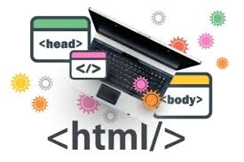
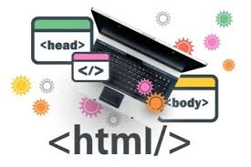
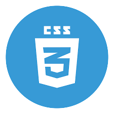
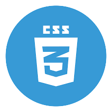

BITACORA DE
CLASE
HTML
HTML5 es un estándar que sirve como referencia del software que conecta
con la elaboración de páginas web en sus diferentes versiones.
CSS, en español 'Hojas de estilo en cascada', es un lenguaje de diseño gráfico
para definir y crear la presentación de un documento estructurado escrito en un lenguaje de marcado.
01/02/2023
En esta clase del dia de hoy vimos a usar por primera vez html5,
ademas vimos etiquetas que existen empezamos a hacer una
bitacora para poner todo lo que haremos en clases.
02/02/2023
En esta clase del dia de hoy vimos a usar GitHub, para crear un repositorio,
subir un archivo con el codigo para posteriormente poderlo modificar si se llegasé
a realizar la modifiacion, y lo increible que GitHub es que te dice que aspectos se modificaron.
08/02/2023
En esta clase del dia de hoy empezamos a poner diseño a nuestra pagina web que
generalmente
se usa css pero por esta clase nos pidio el profesor tratar de poner bonita nuestra bitacora sin
usar
css
que resulto ser muy complicado ya que no hay variedad de etiquetas html para poner diseños y algunas
que pueden ser son de css y no las podemos usar, al final encontre unas cuantas que no son de css.
09/02/2023
En esta clase del dia de hoy vimos a usar css por primera vez y a como conectarlo con
html,
ademas de usar estilos para poner bonita la bitacora y los tipos de fuentes, links y nos mostro
una pagina para ver todos los estilos incluyendo la fuente de letra de css que podemos usar.
15/02/2023
En esta clase del dia de hoy el profesor Gerardo escogio a personas al azar
para que nos mostraran su bitacora y de ahi ver que aspectos le podrian faltar
y/o quitarle cosas como el color de fondo, tipo de letra, tamaño y color de letra.
16/02/2023
En esta clase del dia de hoy el profesor Gerardo nos dio un poco de teoria para
introducirnos al java script, nos pidio que investigaramos la evolucion de la programacion web
y lo que aprendi de esa investigacion fue que en que año salio html1 y css y como influyo su
aparicion en la programacion web, ya que el dia lunes 20 de febrero empezaremos a ver java script.
20/02/2023
En esta clase del dia de hoy el maestro gerardo nos dijo que ya vamos a empezar a hacer
el proyecto empezando con la pagina de login y la de registro, nos pidio ya hacerla a la
brevedad solo usando html y css.
22/02/2023
En esta clase del dia de hoy le agregamos un link que se conecte de login a una pagina
nueva que hize que se llama recuperar tu contraseña, en esa pagina le pusimos el usuario, email
y teleforno para que el usuario pueda recuperar su contraseña, ademas empeze a hacer los 2469
municipios que tiene la republica mexicana.
23/02/2023
En esta clase del dia de hoy platicamos con el profe Gerardo sobre el proyecto que
llevaremos
a acabo durantes los 3 semestres hablamos de que tipo de pagina web seria y ademas de algunos pros
y contras que tiene el proyecto. Ya despues de platicar sobre el proyecto nos pidio hacer en un word una
lista de algunas cosas que se le pueden agregar al proyecto y poner cuales seran sus pros y contras.
27/02/2023
En esta clase del dia de hoy primero repasamos algunos terminos que vendran en el
examen,
¿que es html y css? etc y nos dijo que el examen vale el 80% y trabajos el 20% y por ultimo nos pidio
hacer el index de nuestra pagina, que incluya un menu de la comida que venden en la cafeteria.
01/03/2023
En esta clase del dia de hoy fue la ultima clase previa a su examen, entonces nos pidio
ya completar la bitacora
y terminar con el proyecto de login y eso fue lo que hicimos el dia de hoy.
02/03/2023
En esta clase del dia de hoy hicimos el examen del primer parcial el cual vale el 80% de la calificacion.
06/03/2023
En esta clase del dia de hoy el profe Gerardo les pidio a los equipos de base de datos
hacer una base de datos mientras que los integrantes de otros equipos nos pidio que
investigaramos que es php, y como se compone una base de datos.
08/03/2023
En esta clase del dia de hoy hicimos nuestro primer trabajo en php el cual era conectar
una base de datos
de phpMyAdmin al php con localhost y si todo estaba correcto te tenia que decir conexion correcta,
y al final nos pidio conectar nuestra pagina de registro a la base de datos.
09/03/2023
En esta clase del dia de hoy mi equipo Rocket seleccionamos un proyecto de login con
Gerardo
para que back-end lo conecte a la base de datos usando php y se tendra que mostrar el resulatdo al profe
el dia lunes.
13/03/2023
En esta clase del dia de hoy el profe Gerardo nos pidio entregar la pagina de
registro conectada al php por equipos antes de las 8 de la noche, yo y un amigo nos pusimos
a
comentar el código ya que el profe lo queria comentado.
15/03/2023
En esta clase del dia de hoy El equipo de frontend haciendo el diseño y backend hizo la conexion a la base de datos.
16/03/2023
En esta clase del dia de hoy El profe Gerardo nos comento que a partir de ahora los
dias jueves
seran de revision y en base a la revision nos dara unos consejos para mejorar ya sea front-end o
back-end,
y en esa clase terminamos con la pagina de registrarse que se conectara al phpmyAdmin usuando php.
20/03/2023
Hoy no habia clases
22/03/2023
En esta clase del dia de hoy Crear el menu para la cafeteria de la prepa en mi equipo que es back-end.
23/03/2023
En esta clase del dia de hoy El profe Gerardo nos pidio hacer una tabla como el menu
pero que pueda dar de
alta, modificar o borrar los productos de la cafeteria para el dia lunes 27 de marzo.
27/03/2023
En esta clase del dia de hoy El profe Gerardo reviso los 3 proyectos para ver los
avances y darnos sus puntos de vista,
ademas le dijo a los lideres que se tiene que hacer esta semana para entregar el proximo lunes.
29/03/2023
En esta clase del dia de hoy El profe Gerardo no asisitio pero teniamos trabajo, asi que yo me encargue
en backend de iniciar sesion en la pagina web, mantener la sesion activa y dar logout.
30/03/2023
En esta clase del dia de hoy no asistio el profe Gerardo y ese dia me encargue en backend
de dar de alta usuarios, y borrar y recuperar los datos para que salgan en una tabla.
03/04/2023
En esta clase del dia de hoy El profe Gerardo nos pidio que le mostraramos nuestros proyectos
y nos dijo que le faltaban a los proyectos y para la proxima semana quiere tener las mejoras implementadas
y aparte que al momento de querer comprar un producto te genere un ticket para la cafeteria.
05/03/2023
En esta clase del dia de hoy Continuamos trabajando en el proyecto de la cafeteria, modificando
y agregando algunas cosas nuevas en ciertos apartados
10/03/2023
En esta clase del dia de hoy El profesor Gerardo nos pidio que para el dia miercoles entregar su proyecto, aparte
nos comento que si usamos inteligencia artificial en el proyecto, en automatico nos reprobaria con 0,
y nos pidio lo que tiene que llevar que, la documentacion, Testing, frontend backend, base de datos, ademas de lo que vendra en su examen.
 

 
